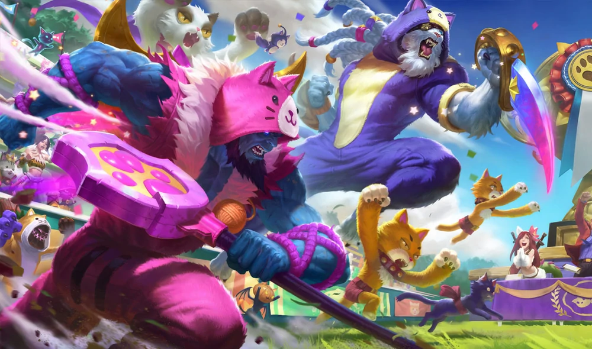
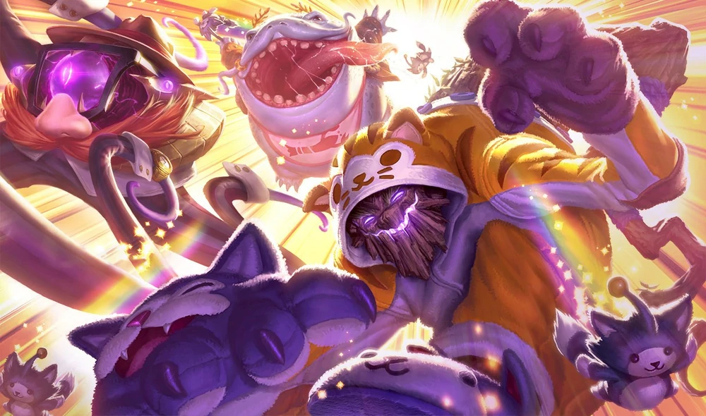
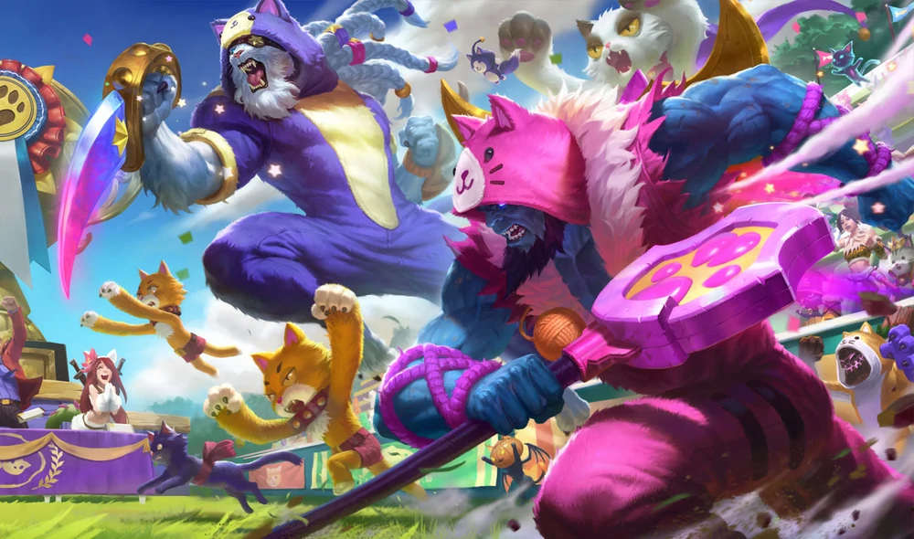
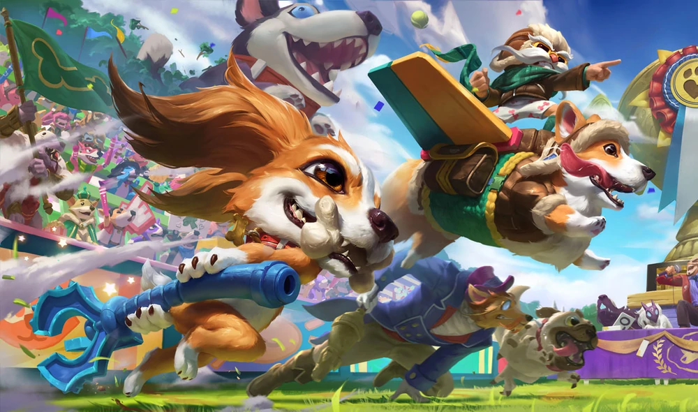
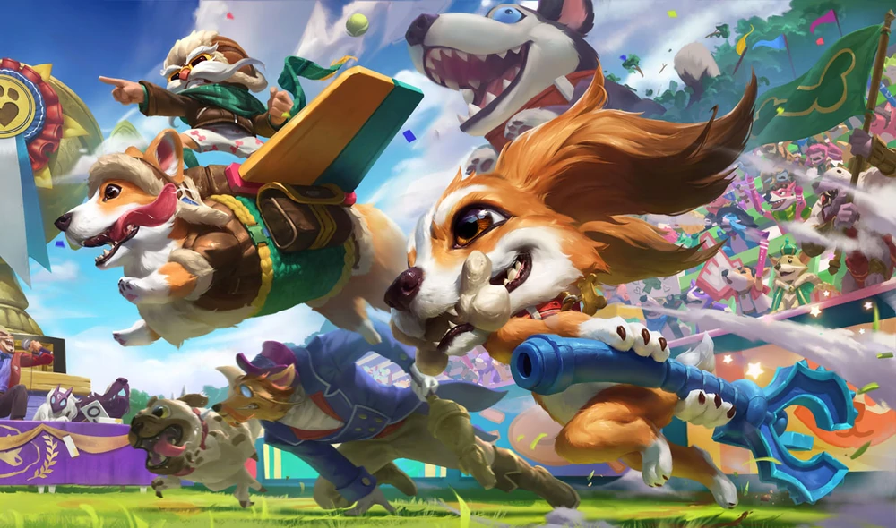
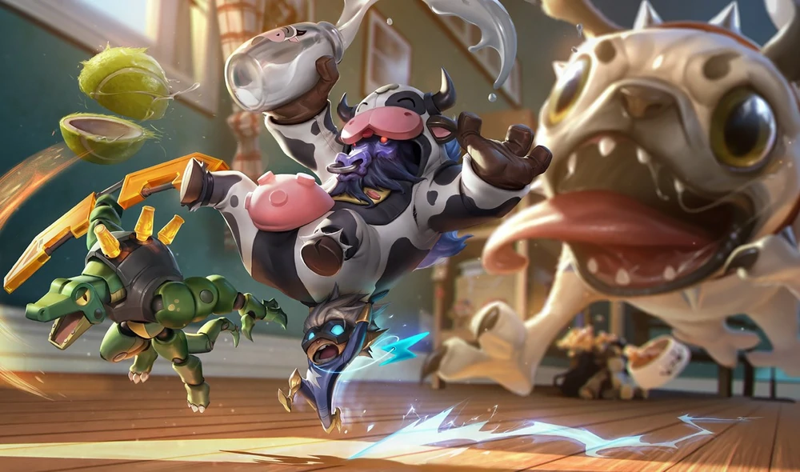
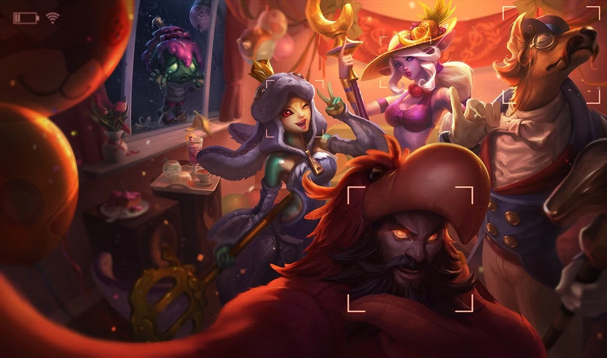
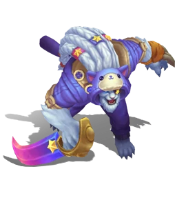
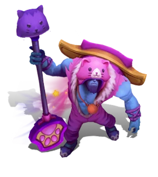

Cats Versus Dogs
Cats Versus Dogs, is an alternate future/universe skins in League of Legends. Set in a world where cats and dogs reign, each of the champions represent an opposing factions battling against each other.









Pretty Kitty Rengar
Once again, the prettiest kitty… is the deadliest.Meowkai
Maokai has, at long last, embraced his role as a giant, haunted scratching post.Meowrick
A cat fancier hailing from the Forsaken Aisles of a Pets Supreme Superstore, Yorick does not have any unresolved issues involving or related to cats. Yorick is a perfectly normal gentleman dressed as a cat, surrounded by cats, who can call upon the esoteric powers of a giant, floating cat. You know, normal gentleman stuff.Corgi Corki
A dog trainer with some impractical ideas about canine aerodynamics, Corki has entered the world's foremost pet show with a flight-enabled Pembroke Welsh Corgi. Why has he done this? What does he hope to gain? Is he really a Yordle, or just a very small man? These are all important questions.Fuzz Fizz
Well, that's horrifying.Pug'Maw
Pug'Maw is a nine month old purebred pug with a sweet disposition and possibly some sort of salivary problem. Great with children and pets. Highly food motivated. Has eaten three action figures and one doll, approach with extreme caution.Archduke Nasus
In primary school, Nasus was told an old dog couldn't learn new tricks. Now, in his older years as an accomplished statesman, painter, and composer, he wonders if there is truth in those words. After all, he simply cannot seem to get his chamber orchestra to listen to his directions.